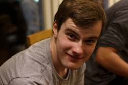
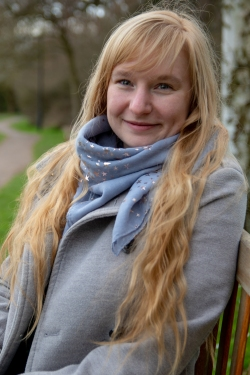
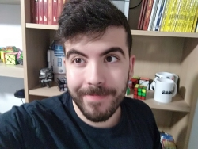
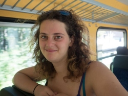
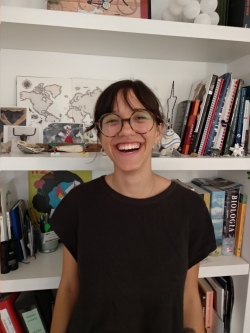
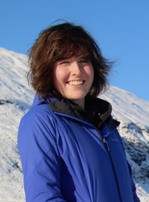
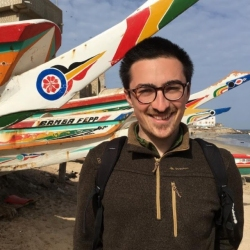
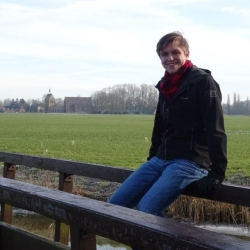
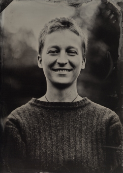

The eIAYC successfully ran in 2020 and 2021 as a response to the global COVID pandemic. This page is no longer current and we are not planning any eIAYCs at the moment.
It is with great sadness that we had to cancel another IAYC, but all is not lost, as we are delighted to announce two new eIAYC activities this summer: an online seminar series and a hackathon. Both former participants and the general public are welcome to participate!
| Event | Dates and times | Sign up | Poster |
|---|---|---|---|
| Seminar Series | Thurs 7pm CEST, biweekly, starting 10th June | Link (deadline 31st May) | Poster |
| Hackathon | Sat 17th 11am to Sun 18th 11pm July CEST | Link (deadline 20th June) | Poster |
Online seminar series
The online seminar series will feature more than 10 different talks by past and present IAYC leaders, followed by informal discussions.
The talks will cover a great variety of astronomy-related topics, ranging from new and exciting research in exoplanets, binary stars, instrumentation, to cosmology, neutrino astrophysics, as well as art, culture, and sustainable development. Please note that the content of the talks will be pitched at a high school science level.
The series will begin on the 10th of June 2021 at 7pm CEST time, and occur every two weeks until September 2021. Each session will feature two talks and last for one hour, followed by a social event. The talks will be livestreamed onrecorded and shared on YouTube and available to watch afterwards.
The seminars will be given by the following leaders: Carys, Cillian, Dan, Eli, Evi, Finnbar, Hannah, Josh (live from the South Pole), Klaus, Mara, Mel, and Nikki.
If you are interested in attending any of these sessions, please sign up here by 31st May 2021.
Hackathon
The hackathon will be a 36-hour event, running from 17th 11am to 18th 11pm July CEST. Anyone can participate, and should aim to be present for the beginning and end of the hack (sleep in between is allowed!). The hack will take place on gather.town, and we will have plenty of (coffee) breaks for games and problem solving. There are prizes to be won for the best and most innovative projects!
Hackathons are a great opportunity to learn new skills, and enhance existing ones. This event will be a bit different compared to typical hacks – we won’t be giving you a specific problem to solve, or a dataset to work with – instead, we want you to come up with a project yourself, based on what you are most interested in learning.
You may already have an idea of what skills you want to develop, but if not, we are here to guide you – the signup form already includes a number of ideas for you to explore. We encourage you to think outside of the box and go outside of your comfort zone – skills could be anything from coding to knitting! You’ll also have the option to work together in groups, or alone if you wish.
There will be a small fee of 3 euros to participate, which will cover some of the costs of running this event. If the fee poses a barrier to your participation, we have a limited number of waivers available – please email us at info@iayc.org to discuss this.
If you are interested in attending the hackathon, please sign up here by 20th June. We will contact you by the end of June regarding your participation.
Leader Team
This eIAYC is brought to you by 11 lovely leaders, learn more about them below.
Carys
Carys is a real veteran, taking part in the IAYC since 2014! She is very bright in physics and ecoding, but can also enlighten you with music, calligraphy and jujitsu! Most importantly she is very good at making friends, a weekend with her is guaranteed to be worth your time!
Dan

Who’s this charming fellow? It’s Dan! A permanent fixture at the IAYC since 2012, this selenophile is currently working towards his PhD at the University of Cambridge. Not only is he an award-winning astrophotographer, he’s a really friendly guy! Ask him about interferometry or his fountain pen collection.
Evi

We all need a triple A in our lives. What is that? An Awesome Austrian Astronomer, of course! I’d personally recommend Evi to you. She’s doing her PhD on exoplanets at Warwick university and she is, objectively, the sweetest person on Earth. You’ll definitely not regret adopting her as your triple A.
Finnbar
Finnbar, the fair-headed one, is an Irishman you will never forget. He has not one but two Masters (one in creative writing and the other in wind power) as well as a bottomless bucket filled with enough energy to create a supernova. Please welcome Finnbar for his first time as leader at the IAYC!
Gabi

Gabi first joined the IAYC in 2016 and has stuck around ever since. He’s got a degree in engineering and is working as a factory supervisor, doing all kinds of mechanical, electronic-related things. Make sure to talk to him as this Espanish guy is incredibly good at solving a Rubik’s cube or other puzzles, while he sure does love Astronomy!
Hannah

Meet Hannah, the oldest Dinosaur on the block. Her first camp was in the Triassic period (2011), becoming a leader in the Cretaceous (2014), and she’s now living in Namibia working on astronomy for development. You’ll never meet a more warm and genuine person, so start up a conversation about camps of old or 90’s music (her taste is impeccable)!
Mara

Mara is one of the most genuine and caring people you will meet at IAYC. She studies physics in Madrid where she’s currently doing her final project on atmosphere dynamics, and is interested in the arts, books, swing dancing, and practical astronomy. She makes everyone feel loved and radiates happiness, so make sure you don’t miss meeting this wonderful person.
Nikki

Ever wished you knew someone who could help you measure the temperature of a star very precisely while also playing you a soothing ukulele tune? Well, do I have the Nikki for you! Ever since 2014, Nikki has been a staple of the IAYC and is ready to do it all again at this year’s eIAYC!
Roger

The Radiant, the Reliable, the Rhythmic… _drum-roll _ ROGER! Not having missed a camp since 2017, this smiley and joyful Catalonian is coming for the first time as a leader! Don’t miss the chance to talk to him about his MSc on Multidisciplinary Research in Experimental Sciences, his movie likes or to sing along with him and his guitar!
Ruurd

We are thrilled to announce one of the new additions to the IAYC leader team is Ruurd! Ruurd first appeared at IAYC in 2018, and while we would love to have him at an in person camp, this will have to do. He is a very chill dude, with a great sense of humour. So come say “Hi” at the gather.town!
Wanda

Wanda is an unstoppable German wonder with very broad interests: she majored in Biology and is currently studying Physics! Wild and with a peaceful soul, she is a nature-loving and heart-warming person, with a passion for sports, and an acute taste for the arts, currently involved in theatre play with physics experiments. She will tell you everything about our planet!
Sponsors
We are very grateful to the following organisations for their sponsorship towards these events and the IAYC in general. If you are interested in sponsoring us and would like your organisation to be listed here, please contact us at sponsorship@iayc.org.